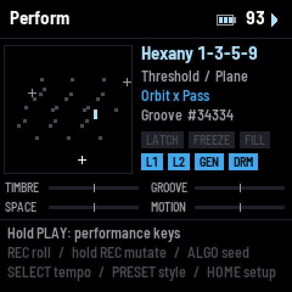
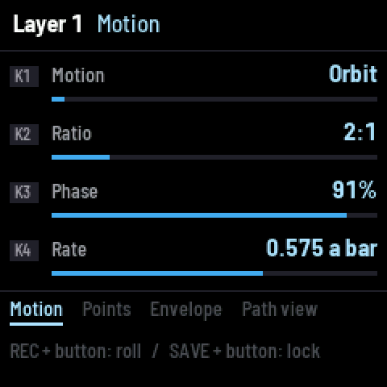
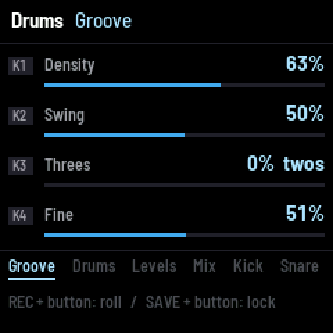
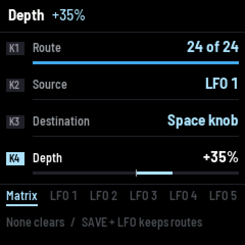
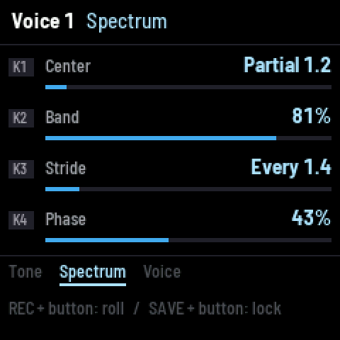
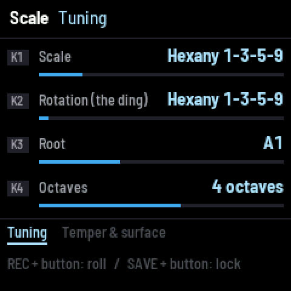
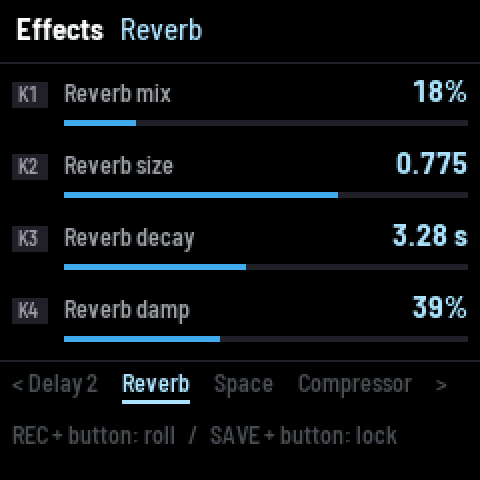
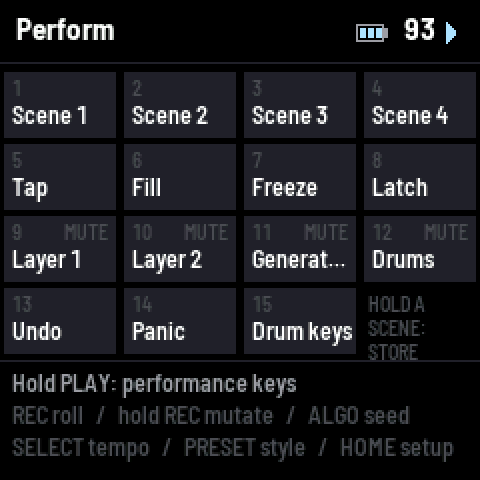

Firmware that turns the FM-1 into a self-playing instrument. Two layers of moving points wander over
a map of a just-intonation scale, and every note they pass near sounds. The rhythm is a continuous landscape, the
drums ride the synth's own notes or play patterns learned from real grooves, and every partial is in tune with its note. Steer it with four
knobs; play into it with the keys.
Quick start in a minute
PLAY. The patch plays itself: points move over the scale and every note they pass sounds.
PRESET picks a style (Hip-hop, House, Funk, Latin, Indie, Ambient…) and rolls a patch in it. Tap REC for a new sound on the same scale.
K1–K4 steer it: Timbre, Groove, Space, Motion. Each rides a path through a dozen settings; the centre is the patch as rolled.
Play the keys. A key sounds its note and pulls the moving points toward it. SAVE + key keeps the patch, HOME + key loads it.
RollsA seed and a style make a whole patch, the same every time. REC rolls the sound, a double tap everything but the scale, hold mutates, REC + SEL the scale. SAVE + a page locks it; PLAY held, key 13 undoes. Two rolls in five are Dry: Space becomes Shape.
As a synthStopped, nothing plays by itself: the keys are a polyphonic synth in the scale, always in tune with the patch. Contour sets struck or bowed; Latch holds a drone; MIDI notes in play the nearest scale note.
Just or equalEvery note is a whole-number ratio of the root and every partial a multiple of its note, so chords fuse. Temper (SEL) moves the notes continuously to 12-tone equal temperament.1
1With other synths: SEL, Temper & surface tab, K1 fully right (Equal (12-tone)); Root to the song's key;
Setup → MIDI out → Tuning: Standard. The root is always at A = 440 Hz equal temperament. USB audio records the FM-1
on a computer, no driver. More in the guide.
How it plays Perform
The mapA scale laid out on a Tonnetz: neighbours are fifths, thirds and sevenths. 41 scales, from the harmonic series to handpan tunings.
Two layersUp to eight points each, moving along continuous functions. A note sounds as loud as the points near it.
The streamRhythm as one smooth function of the bar: swing, three-against-four and long form are continuous controls.
Four knobsTimbre, Groove, Space and Motion each ride a path through a dozen settings. REC rolls a new patch.
Lissajous figures, Kuramoto swarms, the Lorenz attractor, Sinai billiards, gravity wells over the key's own notes,
coprime tape loops, eroding figures and chord progressions, each with eight envelopes and routes that let one layer
move, add to or gate the other. The developer notes give the mathematics.
On the screen every page

Perform

Layer 1 · Motion

Drums · Groove

Modulation · Matrix

Voice 1 · Spectrum

Scale · Tuning

Effects · Reverb

PLAY held
The nine color themes of Setup → General. MANIFOLD is MPL-2.0, built on
fm1-base by Charles Vestal. Not affiliated with M-VAVE.